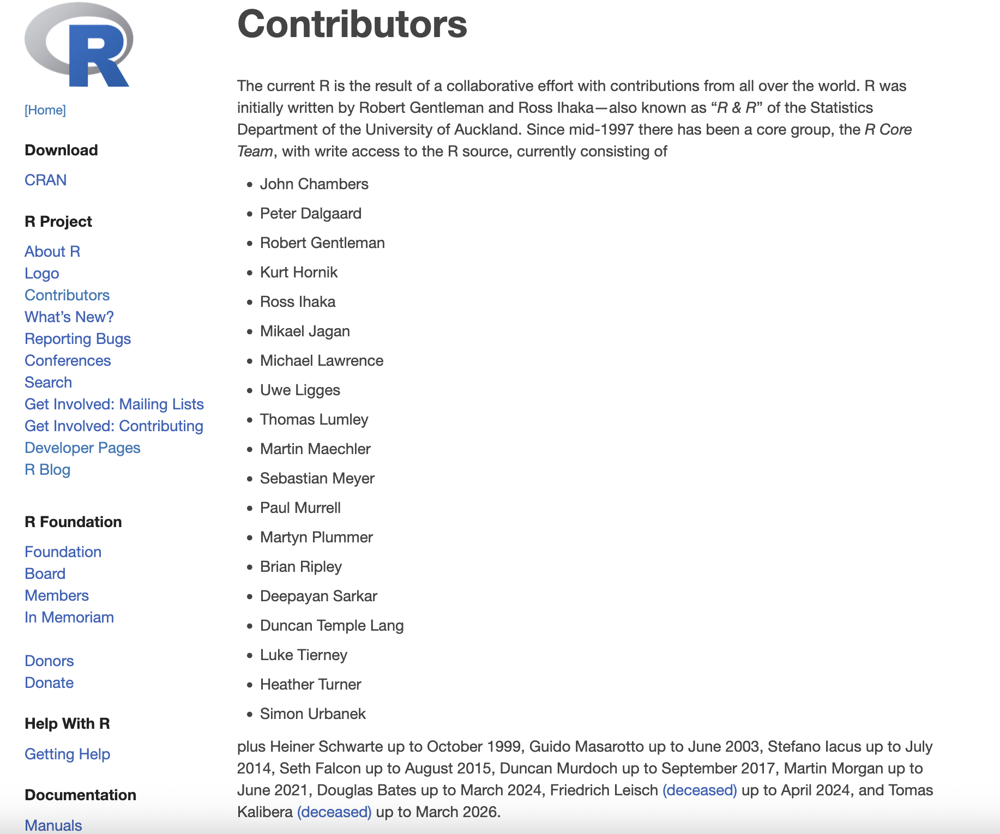
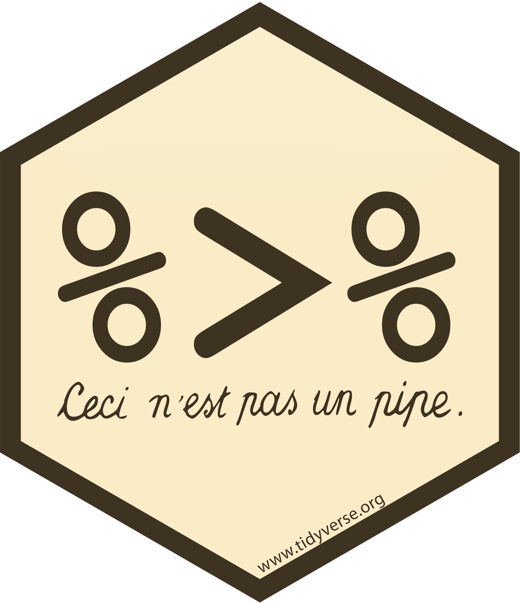
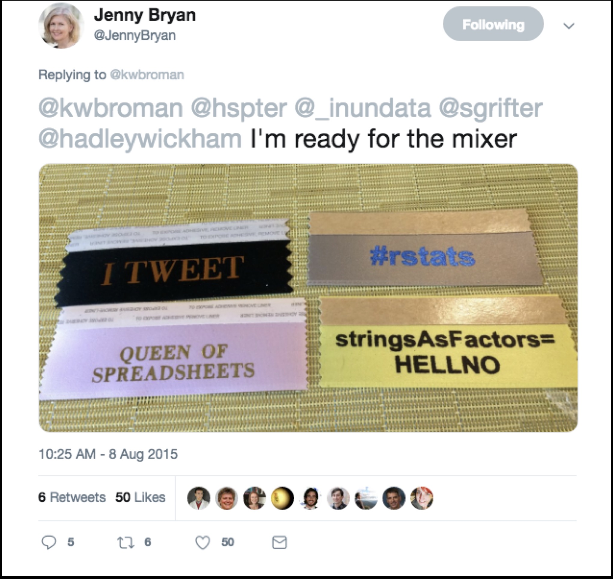
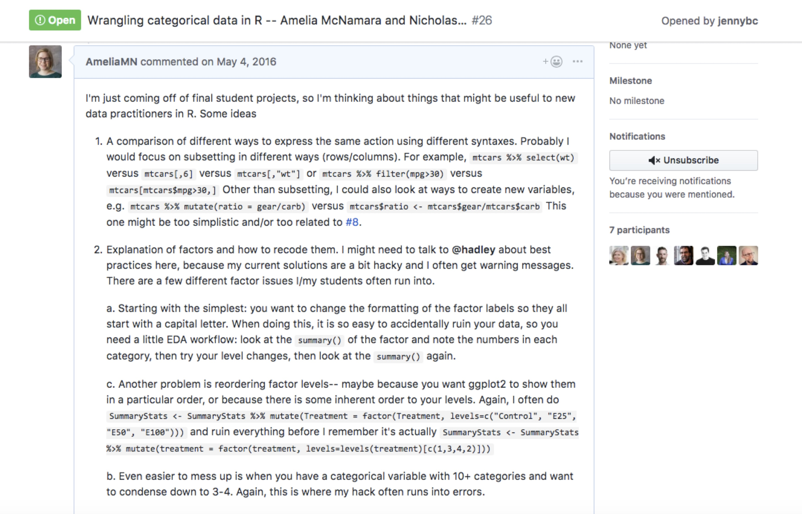
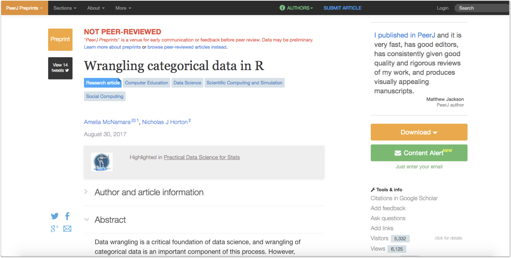

[1] 20 20 10 40 10[1] 20 20 10 40 10
Levels: 10 20 40[1] 2 2 1 3 1Miscellaneous

| is often thought of as “the pipe” (as in unix), but we use that symbol to mean “or” in R.
In 2014, the {magrittr} package added piping functionality to R.

This package name was a reference to René Magritte’s The Treachery of Images,

The {magrittr} pipe was wildly popular, and was likely one of the things that made the tidyverse take off.
In 2021, R 4.1.0 introduced the native pipe operator, |>. Looking back at my own repos, I made the jump in 2023.
If you’re just doing data wrangling, you can basically do a find-and-replace for %>% with |>. Both pipes will pass the previous object in as the first argument of the function they’re piping into. However, there are some differences with the more complex behavior.
x |> mean()
x %>% mean. as the placeholder, the base pipe (as of 4.2.0) uses _. For the base pipe, the argument you are passing the placeholder to must be namedx %>% f(1, .) # is equivalent to
f(1, x)
x |> f(1, y = _) # is equvalent to
f(1, y = x)Many R purists like the base pipe because it “doesn’t require any dependencies.” But actually it has a big dependency– you need R > 4.1.0!
This used to be a bigger deal– when the native pipe was introduced, the tidyverse versioning policy said they needed to support back to 3.5.0. Now, the versioning policy says they only need to support back to 4.2.0.
Still, something to consider.
Back in the day, the Global option stringsAsFactors was set as TRUE. As with many idiosyncrasies of R, this was ‘for backward compatibility with S.’
With stringAsFactors = TRUE, all character strings got read into R as factor variables. This makes sense for variables like race, gender, and other standard categorical variables with just a few levels. But if you’re working with text data that has many unique strings, it does not!
Factors behave in somewhat unexpected ways, so it’s also easy to wreck your data while using them.
This was… a big deal in the R community for a long time

I actually wrote a paper on this (with Nick Horton) and gave a talk about it at rstudio::conf 2019.

I actually wrote a paper on this (with Nick Horton) and gave a talk about it at rstudio::conf 2019.

I think the example that broke for me most-embarassingly (was on a take-home exam) did the following:
- had a categorical variable that wasn’t originally coded as a factor (but as character)
- data was split into test/training. Some of the training had levels that weren’t in the test data and vice versa! So let’s say for argument’s sake that both test and training had 4 different levels for the variable, but only 3 intersecting levels. E.g., test: red, blue, green, brown; training: red, blue, green, yellow.
- the variable was made into a factor to do the classification (I think I even used as.factor() in the classification algorithm / sample code).
- then with the test data, everything worked perfectly (read: no R errors), but it was totally WRONG
If you have never run into issues with factors, thank the tidyverse, specifically {readr} and {forcats}.
And then thank R Core, because in R 4.0.0 they decided to set stringsAsFactors = FALSE by default!
Factors are mostly useful when it comes to modeling (lm() and its family of functions use factors to set reference levels) and plotting (if you want to perfect your ggplot you will probably eventually need to reorder some factor levels).
There are five states a package can be in:
source
bundled
binary
installed
in-memory

source
bundled
binary
installed
in-memory
What you create and work on.
Specific directory structure with some particular components e.g., DESCRIPTION, an R/ directory.
source
bundled
binary
installed
in-memory
Also known as “source tarballs”.
Package files compressed to single file.
Conventionally .tar.gz
You don’t normally need to make one.
Unpacked it looks very like the source package
source
bundled
binary
installed
in-memory
Package distribution for users w/o dev tools
Also a single file
Platform specific: .tgz (Mac) .zip (Windows)
Package developers submit a bundle to CRAN; CRAN makes and distributes binaries
install.packages()
source
bundled
binary
installed
in-memory
A binary package that’s been decompressed into a package library
Command line tool R CMD INSTALL powers all package installation
source
bundled
binary
installed
in-memory
If a package is installed, library() makes its function available by loading the package into memory and attaching it to the search path.
We do not use library() for packages we are working on
devtools::load_all() loads a source package directly into memory.
Not as fleshed-out as the tidyverse style guide, but also developed as a book.
In R, you can have unnamed objects
but, this means that sometimes the length(names()) is 0, and other times it is the same length as the length of x. We strive for more consistency!
{rlang} offers a solution,
These are minimal names– even though they are all empty strings, the length of names() will always be the same length as x.
In base R, there is a function make.unique(), which can be used to create unique names (no duplicates).
For the tidyverse, there are low-level functions vctrs::vec_names() and vctrs::vec_names2(), used by things like the .names_repair argument in tibble() and names_repair in read_csv(). Some options are minimal, unique, and universal (unique and syntactic).
## Original Unique names Result of
## names (tidyverse) make.unique()
## "" ...1 ""
## x x...2 x
## "" ...3 .1
## ... ...4 ...
## y y y
## x x...6 x.1The reason for avoiding ..j is it already has syntactic meaning in R, as a way to refer to arguments passed down from a calling function.
The underscore _ was also considered when choosing the tidyverse suffix strategy, but was rejected.
Why? Because syntactic names can’t start with an underscore and we want the suffix itself to be syntactic. Also, the dot . is already used by base R’s make.names() to replace invalid characters. It seems simpler and, therefore, better to use the same character, in the same way, as much as possible in name repair. We use the dot ., we put it at the front, as many times as necessary.
You have probably encountered non-syntactic names before. If a variable name has a space in it, for example, it becomes non-syntactic.
When calling a function, you should name all but the most important arguments. For example:
Never use partial matching,
When you are teaching, it is best practice to start by naming all arguments, and then relax into the other standard.
At the beginning of a course:
By the end:
A common source of hidden arguments is the use of global options:
stringsAsFactors. We’ve talked about this one.
na.action. This continues to be an issue with functions like lm(), whose handling of missing values depends on the global option of na.action. The default is na.omit which drops the missing values prior to fitting the model (which is inconvenient because then the results of predict() don’t line up with the input data.
system locale. Check with Sys.getlocale()
The way to avoid issues with these common hidden arguments is to make them explicit.
Here’s a wrapper for as.POSIXct() that just shows how the arguments in the original function work:
There is a tz argument, but it’s not clear that "" means our local time zone. It would be better practice to be more explicit,
Most functions get this right!
Some that get it wrong (according to Hadley)
grepl(), gsub() and similar– regex comes firstlm() – formula comes first, rather than dataggplot() – data() comes first, but it many geom_s it would make more sense to have mapping firstSometimes a function that implements multiple strategies might be better off as independent functions. Two signs that this might be the case:
Examples:
forcats::fct_lump() chooses between one of three lumping strategies depending on whether you supply just n, just prop, or neither, while supplying both n and prop is an error. Additionally, the ties.method argument only does anything if you supply only n. fct_lump() is hard to understand and document because it’s really three smaller functions.
Depending on the arguments used library() can load a package, it can list all installed packages, or display the help for a package.
diag() is used to both extract the diagonal of a matrix and construct a matrix from a vector of diagonal values. This combination of purposes makes its arguments hard to understand: if x is a matrix, you can use names but not nrow and ncol; if x is a vector, you can use nrow and ncol but not names.
sample() is used to both randomly reorder a vector and generate a random vector of specified length. This function is particularly troublesome because it picks between the two strategies based on the length of the first argument.
rep() is used to both repeat each element of a vector and to repeat the complete vector. There is a full case study of rep() in the tidy design “book.”
The less you need to know about a function’s inputs to predict the type of its output, the better. Ideally, a function should either always return the same type of thing, or return something that can be trivially computed from its inputs.
If a function is type-stable it satisfies two conditions:
You can predict the output type based only on the input types (not their values).
If the function uses ..., the order of arguments in does not affect the output type.
When using ... to create a data structure, or when passing ... to a user-supplied function, add a . prefix to all named arguments.
We did not cover how to manage change.
Change is a necessary (and frustrating) part of success:
Different levels of change:
|>.This is the simplest possible solution.
... as an argument,There is a lot more detail specific to including data in packages. Sometimes you want to include raw data, sometimes you need data only available to the package and not the user, etc. There is much more detail in the R packages book.
rep() from tidy design.